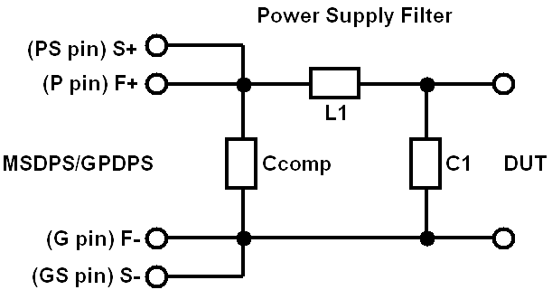

Adapting GP-DPS noise filter for MS-DPS
Generally the MS-DPS does not require any noise filter on a DUT board. If an MS-DPS loads the inductance that is greater than or equal to 10 uH, the MS-DPS might oscillate. On the other hand, the GP-DPS requires a noise filter in most cases. There are some cases that the noise filter for the GP-DPS has some inductance.
If you design a new DUT board adapted to both the GP-DPS and MS-DPS, you need to consider whether a noise filter for the GP-DPS has a negative effect when the MS-DPS is used.
It is recommended to design the LC filter as shown in the following figure. This filter is a low pass filter (LPF).

Select the inductance L1 within the range of 10 µH - 100 µH, and the capacitance C1 within the range of 10 µF - 100 µF for GP-DPS noise suppression. For how to select the values of the filter components, refer to the general literature on analog filter design.
The capacitance Ccomp is for the resonance damping of the MS-DPS. Select a Ccomp value such that the ratio to the inductance L1 is 1. For example, if L1 is 10 µH, Ccomp is 10 µF.
Functional changes
- Introduced before SmarTest 6.3.2